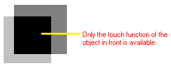
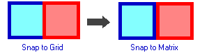
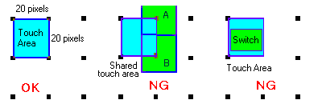
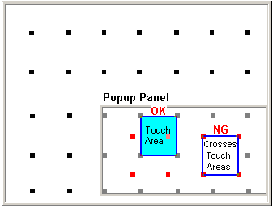

|
|
|
|
|
|
|
|
If a switch is not functioning properly on the target machine, the following are possible causes:
Two switches overlap.
The touch area on the target machine and the switch area do not match.
The switch and a program on equipment write to the same device address.
If two switches overlap, the touch operation(s) for the switch in the back does not execute. Position switches so that they do not overlap with each other. If you used Snap to Grid to position switches, the borders of the switches may overlap. Use Snap to Matrix to make sure the switches do not overlap. For more information, see Section 4.9.3, Setting the Grid.


If you create two switches (A and B) on a single touch area, Switch A and Switch B share the touch area. In this case, Switch B may react even when you touch Switch A. When you position switches, make sure they do not share a touch area.
A switch smaller than 20 by 20 pixels may not function properly.

If touch objects on a popup panel operate erratically, such as the touch operations of a neighboring switch runs instead of the switch that is touched, then the touch objects may not be aligned to the touch grid on the base panel.
When you draw touch objects on popup window panels on targets with 20x20 touch grids, make sure the switch or touch object is aligned with the touch grid on the base panel, not the touch grid on the popup window. See Appendix 5, Hardware Specifications for a list of the supported touch grids for each target machine.

|
Base panel grid points (touch area) |
|
|
Popup panel grid points |
The above example illustrates a popup panel displaying on a base panel. The touch grid is always defined by touch areas on the base panel. The gray grid points in the popup panel define the actual touch areas. The red grid points simply divide the area of the popup panel and do not affect touch areas.
When you draw touch objects on a popup panel, be aware of where the popup panel is going to display and the corresponding touch areas on the popup panel. When the popup window displays, make sure touch objects on the popup panel align with the touch areas on the base panel.
If the program on equipment and the switch are writing to the same address and causing the switch to not work, change the ladder program or switch so that the destination addresses are different.

Another reason the switch doesn't work might be Interlock. If you use Interlock, make sure the Interlock variable is cleared to allow touch.